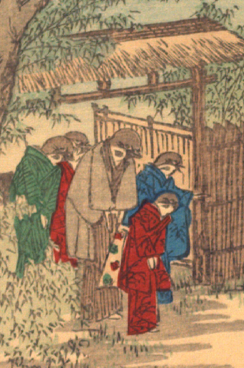

雀の家族。5体の雀がそれぞれ着物を着て、門のところに立っている。袖から出ている手は人間のものである。中央の一番背が高い雀は茶色の着物に灰色の羽織をまとっており、主人と思われる。画面左の緑色の着物をまとった雀は妻と思われる。手前の赤い着物を着た雀、右手の青い着物の雀、一番奥に立つ赤色の着物の雀は娘たちと思われる。皆頭を下げ、前を行く人を見送っている。
出典：親書誌：U426_nichibunken_0109：Le moineau qui a la langue coupée／日付：2006／資源識別子：U426_nichibunken_0109_0005_0000
Copyright (c)2010- International Research Center for Japanese Studies, Kyoto, Japan. All rights reserved.